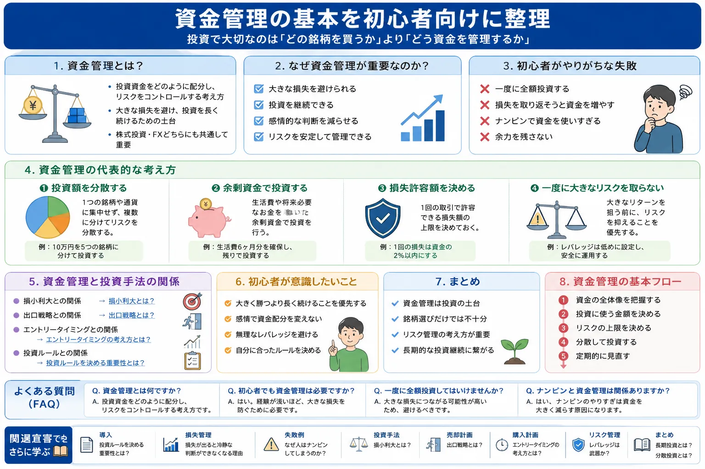

投資手法 / リスク管理の基本
資金管理とは？初心者向けに解説
投資初心者は「どの銘柄を買うか」「どこで入るか」に注目しやすいものです。
しかし、長く投資を続けるためには、資金をどのように配分し、どこまでの損失なら受け入れられるかを考える資金管理が重要です。
Introduction
資金管理はリスク管理の基本

投資では、正しい銘柄を選んだつもりでも、相場の変動によって損失が出ることがあります。そこで大切になるのが、資金を一度に使い切らず、損失が出た場合でも次の判断ができる状態を残しておくことです。
資金管理は、特定の投資手法で必ず利益を出すための裏技ではありません。投資やFXでリスクを取りすぎないようにし、長く学び続けるための基本的な考え方です。あわせて、投資ルールを決める重要性とは？も確認しておくと、資金配分の考え方を整理しやすくなります。
Basic
資金管理とは？
資金管理とは、投資資金をどのように配分し、1回の投資や取引でどの程度のリスクを取るかを考えることです。株式投資でもFXでも、値動きがある以上、損失を完全になくすことはできません。
配分
資金をどこに使うか
複数の銘柄・商品・タイミングに分けることで、特定の判断に資金を集中させすぎないようにします。
損失
どこまでなら耐えられるか
含み損や確定損が出た場合でも、生活や次の投資判断に大きな支障が出ない範囲を考えます。
継続
投資を続けられる状態を残す
一度の失敗で退場しないために、余力を残しながら学び続けられる形を目指します。
Reason
なぜ資金管理が重要なのか？
資金管理が重要なのは、大きな損失を避け、投資を継続しやすくするためです。資金の大部分を一度に使ってしまうと、相場が想定と反対に動いたときに、冷静な判断が難しくなります。
大きな損失を避ける
損失を小さく抑えられれば、次に学び直す余地が残ります。反対に、一度の損失が大きすぎると回復に時間がかかります。
感情的な判断を減らす
投資額が大きすぎると、少しの値動きでも焦りや不安が強くなります。損失時の心理は損失が出ると冷静な判断ができなくなる理由でも解説しています。
リスクを管理する
利益だけを見て資金を入れるのではなく、損失が出た場合の影響まで想定することで、無理のない投資判断につながります。
Common Mistakes
初心者がやりがちな失敗
資金管理でつまずきやすい例を、初心者向けに整理します。
一度に全額投資する
「今がチャンスだ」と感じて、投資資金のほとんどを一度に使ってしまうケースです。うまくいけば大きく見えますが、想定外に下落したときに追加判断や損切りの選択肢が狭くなります。
損失を取り返そうと資金を増やす
損失が出たあとに「次で取り返す」と考えて投資額を大きくすると、さらに損失が広がる可能性があります。負けた直後ほど、金額を増やす前に一度ルールを見直すことが大切です。
ナンピンで資金を使いすぎる
ナンピンは平均取得単価を下げる考え方ですが、計画なしに繰り返すと資金が一つの銘柄やポジションに偏ります。心理面はなぜ人はナンピンしてしまうのか？でも詳しく整理しています。
余力を残さない
余力がない状態では、相場が急変したときに対応しにくくなります。現金余力は「何もしないお金」ではなく、次の判断を冷静にするための余白とも考えられます。
Principles
資金管理の代表的な考え方
投資額を分散する
投資対象や購入タイミングを分けることで、特定の判断に依存しすぎないようにします。詳しくは分散投資とは？も参考になります。
余剰資金で投資する
生活費や近いうちに使う予定のお金ではなく、当面使わない余剰資金の範囲で考えることが基本です。
損失許容額を決める
「いくらまでなら損失を受け入れられるか」を先に決めておくと、損切りや保有継続の判断が感情に流されにくくなります。
一度に大きなリスクを取らない
大きく勝つことよりも、まずは大きく崩れないことを意識します。特にFXではレバレッジの扱いにも注意が必要です。
Relation
資金管理と投資手法の関係
資金管理は、売買タイミングや投資手法と切り離せない考え方です。どれだけ良い分析をしても、1回あたりの資金配分が大きすぎると、少しの失敗で大きなダメージになります。
For Beginners
初心者が意識したいこと
-
大きく勝つより長く続けることを優先する
投資は一度の勝ち負けで完結するものではありません。まずは退場しない資金配分を意識しましょう。
-
感情で資金配分を変えない
焦りや欲で投資額を増やすと、リスクも同時に大きくなります。事前に決めたルールを守ることが重要です。
-
無理なレバレッジを避ける
FXや信用取引では、少ない資金で大きな取引ができますが、損失も大きくなりやすい点に注意が必要です。
-
自分に合ったルールを決める
収入、生活費、投資経験、性格によって無理のない金額は変わります。他人の金額をそのまま真似しないことも大切です。
Summary
まとめ
資金管理は、投資の土台となる考え方です。銘柄選びやチャート分析だけでは、投資を長く続けるためには不十分な場合があります。
- 資金管理は、投資資金の配分と損失コントロールを考えること
- 一度に全額を使うと、下落時に冷静な判断が難しくなる
- ナンピンやレバレッジは、資金管理とセットで考える必要がある
- 大きく勝つことより、長く続けることを優先する姿勢が大切
長期的に投資を続けたい場合は、長期投資とは？や分散投資とは？もあわせて確認しておくと、資産を守る考え方を広げやすくなります。
FAQ
よくある質問
-
Q. 資金管理とは何ですか？
資金管理とは、投資資金をどのように配分し、1回の投資や取引でどの程度の損失まで許容するかを考えることです。利益を狙う前に、損失を大きくしすぎないための基本になります。 -
Q. 初心者でも資金管理は必要ですか？
必要です。初心者ほど相場の値動きや損失時の心理に慣れていないため、最初から資金を使いすぎない考え方が大切です。 -
Q. 一度に全額投資してはいけませんか？
必ず禁止という意味ではありません。ただし、初心者が全額を一度に投資すると、下落時に余力がなくなり、冷静な判断が難しくなる場合があります。 -
Q. ナンピンと資金管理は関係ありますか？
関係があります。ナンピンは追加資金を使う行動なので、計画なしに繰り返すと資金が偏り、損失が大きくなる可能性があります。
一般ユーザー目線の体験でおすすめの会社をご紹介

ご利用にあたっての注意事項
本記事は情報提供を目的としており、投資の勧誘を目的としたものではありません。株式・投資信託・外国証券・FX等の取引は元本保証がなく、相場変動等により損失が生じる場合があります。取引開始前に、契約締結前交付書面や商品説明書、目論見書等を必ずご確認のうえ、ご自身の判断と責任でお取引ください。